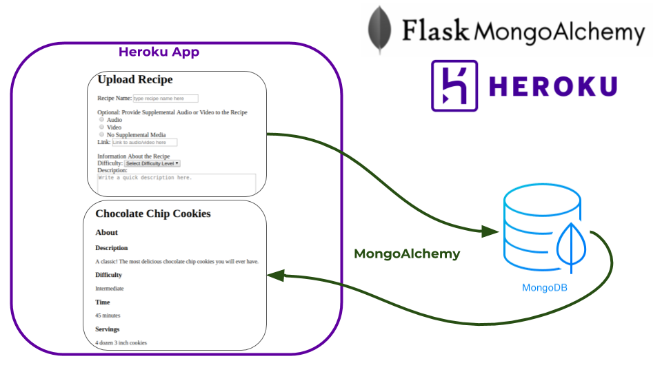

Our website is built on Flask, MongoDB, and Heroku. The image below shows the general software system.
Searching for recipes is based on the title and tags of the recipe. More on searching here
When a user submits a recipe or tip, we also automatically detect and fix formatting problems, such as writing out fractions. Other things we may or may not be detecting, or hope to detect